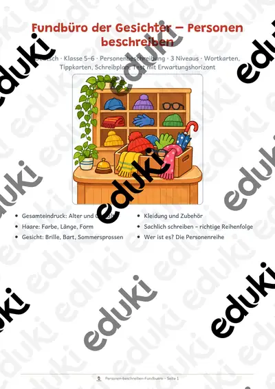
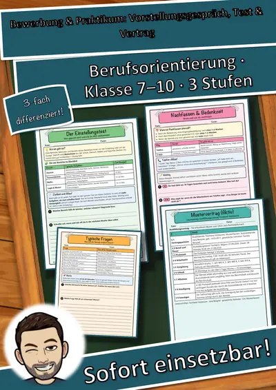
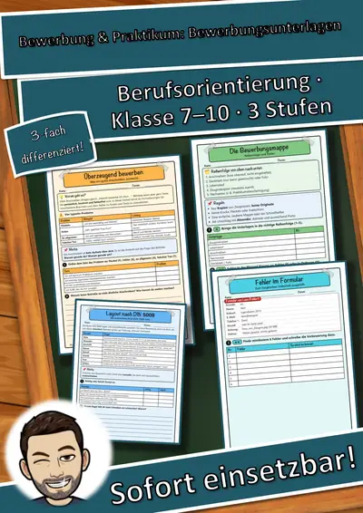
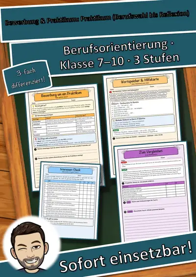
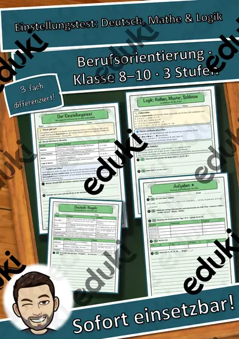

04-06 Internationaler Tag des Sports für Entwicklung und Frieden
Dieses Unterrichtsmaterial zielt darauf ab, das Lese- und Textverständnis der Schüler*innen zu fördern und ihnen die Bedeutung des Internationalen Tags des Sports für Entwicklung und Frieden näherzubringen.
Fragen zum Text: Die Fragen helfen den Schüler*innen, wichtige Informationen aus dem Text zu extrahieren und zu reflektieren.
Lösungsblatt: Ein vollständiges Lösungsblatt unterstützt die Lehrkraft bei der Auswertung der Antworten.
Vorschläge für Unterrichtsaktivitäten
Diskussion über den Textinhalt
Schritt 1: Teile die Klasse in kleine Gruppen auf.
Schritt 2: Jede Gruppe diskutiert die Fragen aus dem Arbeitsblatt.
Schritt 3: Nach 15 Minuten präsentiert jede Gruppe ihre Antworten der Klasse.
Schritt 4: Führe eine gemeinsame Reflexion über die verschiedenen Perspektiven durch.
Jigsaw-Methode
Schritt 1: Teile den Text in Abschnitte auf und gib jedem Schüler*in einen Abschnitt.
Schritt 2: Schüler*innen mit dem gleichen Abschnitt treffen sich, um den Inhalt zu besprechen.
Schritt 3: Bildet neue Gruppen, in denen jede*r Schüler*in einen anderen Abschnitt präsentiert.
Schritt 4: Fasse die wichtigsten Punkte der Diskussion zusammen.
Vorwissen aktivieren
Schritt 1: Beginne die Stunde mit einer kurzen Diskussion über Sport und dessen Bedeutung im Alltag.
Schritt 2: Frage die Schüler*innen, was sie über den Internationalen Tag des Sports wissen.
Schritt 3: Leite dann zum Text über und lasse die Schüler*innen den Text lesen.
Schritt 4: Diskutiere, wie das Vorwissen mit dem Textinhalt verknüpft werden kann.
Wiederholung und Memorierung
Schritt 1: Lasse die Schüler*innen den Text laut vorlesen.
Schritt 2: Erstelle ein Quiz mit Fragen zum Text, das die Schüler*innen in Partnerarbeit beantworten.
Schritt 3: Bespreche die Antworten im Plenum und kläre Unklarheiten.
Schritt 4: Führe eine kurze Wiederholung der wichtigsten Punkte durch.
Visuelle Darstellung des Inhalts
Schritt 1: Bitte die Schüler*innen, ein Plakat zu erstellen, das die Hauptideen des Textes visuell darstellt.
Schritt 2: Sie können Bilder, Zeichnungen oder Diagramme verwenden.
Schritt 3: Lasse die Schüler*innen ihre Plakate der Klasse präsentieren.
Schritt 4: Diskutiere, wie die visuellen Elemente das Verständnis des Textes unterstützen.
Ähnliche Materialien

Fundbüro der Gesichter: Personen beschreiben und Suchmeldungen schreiben – Deutsch Klasse 5–6

Bewerbung & Praktikum – Paket Vorstellungsgespräch, Test & Vertrag: 6 Einheiten (Klasse 7–10)

Bewerbung & Praktikum – Paket Bewerbungsunterlagen: 5 Einheiten (Klasse 7–10)

Bewerbung & Praktikum – Paket Praktikum (Berufswahl bis Reflexion): 8 Einheiten (Klasse 7–10)

Praktikumsmappe & Praktikumsbericht – Bewerbung & Praktikum, 3 Stufen, mit Hilfen & Lösungen (Klasse 7–10)

Zusage, Absage & Nachfassen – Bewerbung & Praktikum, 3 Stufen, mit Hilfen & Lösungen (Klasse 7–10)

Assessment-Center – Bewerbung & Praktikum, 3 Stufen, mit Hilfen & Lösungen (Klasse 7–10)
